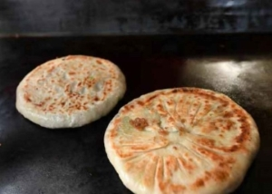

| 您当前的位置： 首页 > 本地美食 > 南马肉饼 |
美食介绍

南马肉饼最早出现于明朝。东阳是教育之乡，很多文人雅士进京赶考，南方人又不喜欢吃馒 头，带的干粮很少，常常路上饿着。 有一天，儿子要上京赶考，老母亲正好在和面做饼吃，儿子说:"娘，就这样干的饼带去很难咽下去。" 老母亲一想，正好家里杀了猪，就把一块猪肉剁碎了包在面里面，这样就好像带了菜了。第二天儿子出发了，同行的还有一些考生。 走到一半，大家都饿了，只能干啃馒头，很渴。但是只有他吃的津津有味的。大家就觉得奇怪，要了一些吃了，觉得很美味。
因为那户人家住在南马，所以就给它取名叫南马肉饼。一直延续至今，南马肉饼已经是东阳有名的小吃了。
美食制作
食材明细
- 咸鲜 口味
- 廿分钟 耗时
- 简单 难度
做法步骤
-
1准备食材
-
2在热锅里倒入适量食用油，调成小火，待油温5成热时，放入肉末翻炒，倒入料酒，然后把咸菜倒入继续翻炒，2~3分钟后出锅晾凉待用（喜欢吃辣的可以放点小米椒）
-
3将面粉倒入大碗中，在小龙头下用筷子搅拌（水开尽量小），搅拌至絮状关水。继续搅拌至面团不粘碗且成一整团待用，将面团分成5~6个等分，每个擀成圆形的薄皮。
-
4将放凉的咸菜肉末放入面皮中裹好，将饼上的面粉用刷子刷掉，放入热油锅，小火煎，双面煎黄即可出锅。
推荐餐厅
陈宅街南马肉饼 到这去
东阳市吴宁四小旁边的一家多年老字号南马肉饼店，味道正宗，价格实惠，店面虽小，却每天都能排起一条长队，生意兴隆。